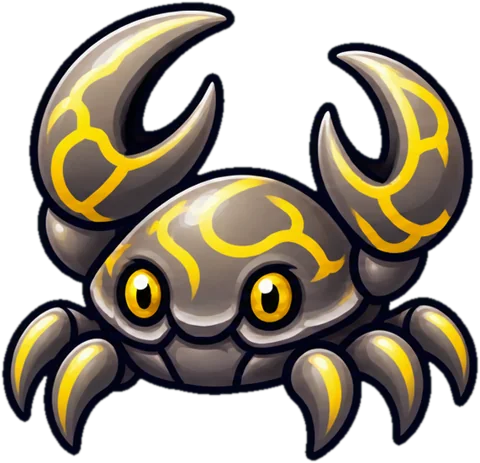

 Electric
ElectricTap a stage to read its story.
Scuttler hatches near the outer cooling ring of Lava Crater, its small round shell mottled black-and-gold like the crust of cooling magma. It scuttles erratically between hot rocks, using its body heat to crack mineral crusts and eat the salt crystals underneath. Electric sparks jump between its legs when it moves fast, a side effect of the volcanic minerals it absorbs. It has the look of a creature that has never quite decided which direction to go, and changes course a dozen times a minute.
Field note: Scuttler's shell temperature runs 40 degrees above the ambient crater air - you can feel warmth radiating from it from two hand-widths away.
Lava Crater. Scuttler and its family are found in the Lava Crater. See everyone who lives there.
Share a Bond Food that matches its types to become friends. Scuttler loves:
A Bond Food is not a trick. It joins your spirit with the Kimuro's spirit, and only when it chooses you.
Print the Kimuro adventure packs: mazes, cards, a board game and Bond Mark medals.
See the printable packs